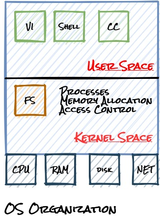
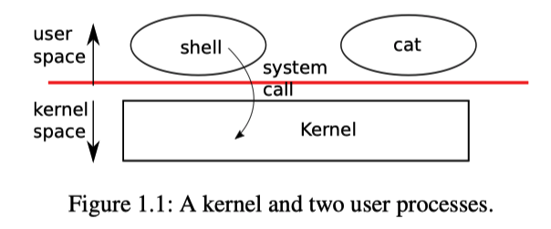
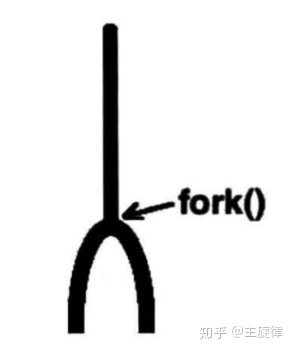
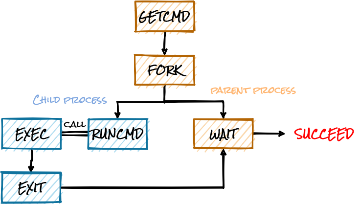

<!DOCTYPE html>
<html lang="en" >


<head>
  <meta charset="UTF-8">
  <link rel="apple-touch-icon" sizes="76x76" href="/img/favicon.png">
  <link rel="icon" type="image/png" href="/img/favicon.png">
  <meta name="viewport"
        content="width=device-width, initial-scale=1.0, maximum-scale=1.0, user-scalable=no, shrink-to-fit=no">
  <meta http-equiv="x-ua-compatible" content="ie=edge">
  
  <meta name="theme-color" content="black">
  <meta name="description" content="">
  <meta name="author" content="Chenlu Miao">
  <meta name="keywords" content="">
  <title>操作系统接口 - Explorer</title>

  <link  rel="stylesheet" href="https://cdn.staticfile.org/twitter-bootstrap/4.4.1/css/bootstrap.min.css" />


  <link  rel="stylesheet" href="https://cdn.staticfile.org/github-markdown-css/4.0.0/github-markdown.min.css" />
  <link  rel="stylesheet" href="/lib/hint/hint.min.css" />

  
    
    <link  rel="stylesheet" href="https://cdn.staticfile.org/highlight.js/10.0.0/styles/atom-one-dark.min.css" />
  

  
    <link  rel="stylesheet" href="https://cdn.staticfile.org/gitalk/1.6.2/gitalk.css" />
  


<!-- 主题依赖的图标库，不要自行修改 -->

<link rel="stylesheet" href="//at.alicdn.com/t/font_1749284_6peoq002giu.css">


<link rel="stylesheet" href="//at.alicdn.com/t/font_1736178_pjno9b9zyxs.css">


<link  rel="stylesheet" href="/css/main.css" />

<!-- 自定义样式保持在最底部 -->


  <script  src="/js/utils.js" ></script>
  <script  src="/js/color-schema.js" ></script>
<meta name="generator" content="Hexo 4.2.1"></head>


<body>
  <header style="height: 70vh;">
    <nav id="navbar" class="navbar fixed-top  navbar-expand-lg navbar-dark scrolling-navbar">
  <div class="container">
    <a class="navbar-brand"
       href="/">&nbsp;<strong>Explorer</strong>&nbsp;</a>

    <button id="navbar-toggler-btn" class="navbar-toggler" type="button" data-toggle="collapse"
            data-target="#navbarSupportedContent"
            aria-controls="navbarSupportedContent" aria-expanded="false" aria-label="Toggle navigation">
      <div class="animated-icon"><span></span><span></span><span></span></div>
    </button>

    <!-- Collapsible content -->
    <div class="collapse navbar-collapse" id="navbarSupportedContent">
      <ul class="navbar-nav ml-auto text-center">
        
          
          
          
          
            <li class="nav-item">
              <a class="nav-link" href="/">
                <i class="iconfont icon-home-fill"></i>
                Home
              </a>
            </li>
          
        
          
          
          
          
            <li class="nav-item">
              <a class="nav-link" href="/archives/">
                <i class="iconfont icon-archive-fill"></i>
                Archives
              </a>
            </li>
          
        
          
          
          
          
            <li class="nav-item">
              <a class="nav-link" href="/categories/">
                <i class="iconfont icon-category-fill"></i>
                Categories
              </a>
            </li>
          
        
          
          
          
          
            <li class="nav-item">
              <a class="nav-link" href="/tags/">
                <i class="iconfont icon-tags-fill"></i>
                Tags
              </a>
            </li>
          
        
          
          
          
          
            <li class="nav-item">
              <a class="nav-link" href="/about/">
                <i class="iconfont icon-user-fill"></i>
                About
              </a>
            </li>
          
        
        
          <li class="nav-item" id="search-btn">
            <a class="nav-link" data-toggle="modal" data-target="#modalSearch">&nbsp;<i
                class="iconfont icon-search"></i>&nbsp;</a>
          </li>
        
        
      </ul>
    </div>
  </div>
</nav>

    <div class="banner intro-2" id="background" parallax=true
         style="background: url('/img/default.jpg') no-repeat center center;
           background-size: cover;">
      <div class="full-bg-img">
        <div class="mask flex-center" style="background-color: rgba(0, 0, 0, 0.3)">
          <div class="container page-header text-center fade-in-up">
            <span class="h2" id="subtitle">
              
            </span>

            
              
  <div class="mt-3 post-meta">
    <i class="iconfont icon-date-fill" aria-hidden="true"></i>
    <time datetime="2020-11-27 11:44" pubdate>
      November 27, 2020 am
    </time>
  </div>


<div class="mt-1">
  
    
    <span class="post-meta mr-2">
      <i class="iconfont icon-chart"></i>
      1.5k 字
    </span>
  

  
    
    <span class="post-meta mr-2">
      <i class="iconfont icon-clock-fill"></i>
      
      
      17
       分钟
    </span>
  

  
  
    
      <!-- LeanCloud 统计文章PV -->
      <span id="leancloud-post-views-container" class="post-meta" style="display: none">
        <i class="iconfont icon-eye" aria-hidden="true"></i>
        <span id="leancloud-post-views"></span> 次
      </span>
    
  
</div>

            
          </div>

          
        </div>
      </div>
    </div>
  </header>

  <main>
    
      

<div class="container-fluid">
  <div class="row">
    <div class="d-none d-lg-block col-lg-2"></div>
    <div class="col-lg-8 nopadding-md">
      <div class="container nopadding-md" id="board-ctn">
        <div class="py-5" id="board">
          <article class="post-content mx-auto" id="post">
            <!-- SEO header -->
            <h1 style="display: none">操作系统接口</h1>
            
              <p class="note note-info">
                
                  本文最后更新于：December 3, 2020 am
                
              </p>
            
            <div class="markdown-body" id="post-body">
              <h1 id="Overview"><a href="#Overview" class="headerlink" title="Overview"></a>Overview</h1><p>如下图所示是一个计算机系统，最底层有有一些硬件资源，比如: CPU, 内存，磁盘，网卡。</p>
<p>在上层运行一些应用程序，比如一个文本编辑器（VI），一个C编译器(CC), 一个Shell。这些程序都运行在一个空间中：用户空间(user space)。</p>
<p>除了用户空间还存在一个内核空间(kernel space)。kernel对底层管理硬件资源，为上层程序提供了大量的服务。他对用户空间程序(进程)，对内存进行分配，进行访问控制……。kernel程序总是第一个被启动的，他也是独一无二的存在。</p>
<p></p>
<p>用户空间又如何与内核空间进行交互呢？这是通过一系列的接口来实现的。通常这通过系统调用 (system call)来实现。</p>
<p>如下图所示，在用户空间中有一个shell程序在运行。如果这个时候得到一条读取文件的命令，shell invoke <code>read</code> 这个system call， 跳转到内核空间，执行该命令，然后将结果返回用户空间。 [这里是这么实现的呢]</p>
<p></p>
<h1 id="一些系统调用"><a href="#一些系统调用" class="headerlink" title="一些系统调用"></a>一些系统调用</h1><h2 id="fork"><a href="#fork" class="headerlink" title="fork"></a><code>fork</code></h2><div class="table-container">
<table>
<thead>
<tr>
<th>System Call</th>
<th>Description</th>
</tr>
</thead>
<tbody>
<tr>
<td><code>int fork()</code></td>
<td>Create a process, return child’s PID</td>
</tr>
</tbody>
</table>
</div>
<p><code>fork</code> 的作用是克隆进程，也就是将原先的一个进程再克隆出一个来，克隆出的这个进程就是原进程的子进程，这个子进程和其他的进程没有什么区别，同样拥有自己的独立的地址空间。不同的是子进程是在fork返回之后才开始执行的。</p>
<p>在XV6中，父子进程除了fork的返回值，其他都是一样的。除了内存是一样的以外，文件描述符的表单也从父进程拷贝到子进程。所以如果父进程打开了一个文件，子进程可以看到同一个文件描述符，尽管子进程看到的是一个文件描述符的表单的拷贝。</p>
<p><code>fork</code>函数有三个返回值</p>
<ul>
<li>该进程为父进程时，返回子进程的pid</li>
<li>该进程为子进程时，返回0</li>
<li>fork执行失败，返回-1</li>
</ul>
<p></p>
<div class="hljs"><pre><code class="hljs cpp"><span class="hljs-meta">#<span class="hljs-meta-keyword">include</span><span class="hljs-meta-string">&lt;stdio.h&gt;</span></span>
<span class="hljs-meta">#<span class="hljs-meta-keyword">include</span><span class="hljs-meta-string">&lt;unistd.h&gt; 	//for fork</span></span>
<span class="hljs-meta">#<span class="hljs-meta-keyword">include</span><span class="hljs-meta-string">&lt;sys/wait.h&gt;//for wait</span></span>

<span class="hljs-function"><span class="hljs-keyword">int</span> <span class="hljs-title">main</span><span class="hljs-params">()</span> </span>&#123;
  <span class="hljs-keyword">int</span> pid = fork();
  <span class="hljs-keyword">if</span>(pid &gt; <span class="hljs-number">0</span>) &#123;
    <span class="hljs-built_in">printf</span>(<span class="hljs-string">"parent: child = %d\n"</span>, pid);
    pid = wait(<span class="hljs-number">0</span>);
    <span class="hljs-built_in">printf</span>(<span class="hljs-string">"child %d is done\n"</span>, pid);
  &#125; <span class="hljs-keyword">else</span> <span class="hljs-keyword">if</span>(pid == <span class="hljs-number">0</span>) &#123;
    <span class="hljs-built_in">printf</span>(<span class="hljs-string">"child: exiting\n"</span>);
  &#125; <span class="hljs-keyword">else</span> &#123;
    <span class="hljs-built_in">printf</span>(<span class="hljs-string">"fork error\n"</span>);
  &#125;
&#125;</code></pre></div>
<p>输出</p>
<div class="hljs"><pre><code class="hljs shell"><span class="hljs-meta">$</span><span class="bash">./a.out</span>
parent: child = 24482
child: exiting
child 24482 is done</code></pre></div>
<h2 id="exec"><a href="#exec" class="headerlink" title="exec"></a><code>exec</code></h2><div class="table-container">
<table>
<thead>
<tr>
<th>System call</th>
<th>Description</th>
</tr>
</thead>
<tbody>
<tr>
<td><code>int exec(char* file, char* argv[])</code></td>
<td>Load a file and execute it with arguments; only returns if error</td>
</tr>
</tbody>
</table>
</div>
<p>把当前进程的内存替换为文件里保存的内存镜像并执行之。<code>exec</code>有两个参数，第一个是要执行的程序，第二个这个程序的参数(以字符串数组的形式出现)。</p>
<ol>
<li>exec系统调用会保留当前的文件描述符表单。所以任何在exec系统调用之前的文件描述符，例如0，1，2等。它们在新的程序中表示相同的东西。</li>
<li>通常来说exec系统调用不会返回，因为exec会完全替换当前进程的内存，相当于当前进程不复存在了，所以exec系统调用已经没有地方能返回了。</li>
</ol>
<div class="hljs"><pre><code class="hljs cpp"><span class="hljs-meta">#<span class="hljs-meta-keyword">include</span><span class="hljs-meta-string">&lt;stdio.h&gt;</span></span>
<span class="hljs-meta">#<span class="hljs-meta-keyword">include</span> <span class="hljs-meta-string">&lt;unistd.h&gt;</span></span>

<span class="hljs-function"><span class="hljs-keyword">int</span> <span class="hljs-title">main</span><span class="hljs-params">()</span> </span>&#123;
  <span class="hljs-keyword">char</span>* argv[] = &#123;<span class="hljs-string">"echo"</span>, <span class="hljs-string">"this"</span>, <span class="hljs-string">"is"</span>, <span class="hljs-string">"echo"</span>, <span class="hljs-number">0</span>&#125;;
  execv(<span class="hljs-string">"/bin/echo"</span>, argv);

  <span class="hljs-built_in">printf</span>(<span class="hljs-string">"exec failed\n"</span>);
&#125;</code></pre></div>
<p>输出</p>
<div class="hljs"><pre><code class="hljs shell"><span class="hljs-meta">$</span><span class="bash"> ./a.out  </span>
this is echo</code></pre></div>
<h2 id="shell是怎么工作的"><a href="#shell是怎么工作的" class="headerlink" title="shell是怎么工作的"></a>shell是怎么工作的</h2><p>首先看 <code>main</code> 函数，main loop通过 <code>getcmd</code>读取一行输入</p>
<p>然后调用 <code>fork</code>函数，创建一个shell process的copy。子进程通过<code>runcmd</code>执行命令，父进程等待。</p>
<div class="hljs"><pre><code class="hljs cpp"><span class="hljs-keyword">int</span>
main(<span class="hljs-keyword">void</span>)
&#123;
  	<span class="hljs-keyword">static</span> <span class="hljs-keyword">char</span> buf[<span class="hljs-number">100</span>];
	..

      <span class="hljs-comment">// Read and run input commands.</span>
    <span class="hljs-keyword">while</span>(getcmd(buf, <span class="hljs-keyword">sizeof</span>(buf)) &gt;= <span class="hljs-number">0</span>)&#123;
    	...
        <span class="hljs-keyword">if</span>(fork1() == <span class="hljs-number">0</span>)
          runcmd(parsecmd(buf));
        wait(<span class="hljs-number">0</span>);
    &#125;
    <span class="hljs-built_in">exit</span>(<span class="hljs-number">0</span>);
&#125;</code></pre></div>
<p>比如用户在shell中输入了 <code>echo hello</code>, <code>getcmd</code>获取了这条命令，通过fork创建了子进程，子进程调用 <code>runcmd</code>函数，<code>runcmd</code>将<code>echo hello</code>作为其参数。在<code>runcmd</code>中，他调用 <code>exec</code>函数执行<code>echo</code>。在某个时刻, <code>echo</code>调用 <code>exit</code>函数，这使父进程return from <code>wait</code></p>
<p></p>
<h1 id="fork-amp-exec-OR-forkexec"><a href="#fork-amp-exec-OR-forkexec" class="headerlink" title="fork() &amp; exec() OR forkexec()"></a><code>fork()</code> &amp; <code>exec()</code> OR <code>forkexec()</code></h1><div class="note note-warning">
            <p>如上面所说，<code>fork</code>了之后再需要调用<code>exec</code>将替换子进程的内存，为什么不直接将<code>fork</code>和<code>exec</code>合并成一个system call呢?</p>
          </div>
<p>将<code>fork</code>与<code>exec</code>分成两个系统调用，方便了I/O redirection的实现</p>
<p>如下所示, 我们希望将echo hello的输出结果重定向到<code>newfile.txt</code>。</p>
<div class="hljs"><pre><code class="hljs shell"><span class="hljs-meta">$</span><span class="bash"> <span class="hljs-built_in">echo</span> hello &gt; newfile.txt</span></code></pre></div>
<p>shell实现的方法是: 在子进程创建后，调用 <code>exec</code>之前，shell关闭标准输出，并且打开文件<code>newfile.txt</code>, 这样结果就不会被输出到屏幕上，而是被输出到<code>newfile.txt</code>。</p>
<p>当然这个效果也依赖于操作系统对文件描述符的管理方式。文件描述符由kernel管理的对象，用一个比较小的整数来表示，把文件描述符指向的对象称为file，通过文件描述符可以对文件进行读写操作。通常，0为standard input, 1为standard output, 2为standard error。在分配文件描述符时，UNIX系统会从0开始寻找第一个可以使用的文件描述符。shell关闭了标准输出后，<code>STDOUT_FILENO</code>就是第一个可以使用的文件描述符。调用<code>open</code>函数打开文件后，这个文件就会被分配到这个文件描述符。</p>
<p>考虑，如果将<code>fork</code>, <code>exec</code>合并为一个系统调用<code>forkexec</code>，那怎么才能实现重定向呢？有几下几种思考</p>
<ul>
<li>shell在调用<code>forkexec</code>之前修改他的I/O</li>
<li><code>forkexec</code>接受I/O重定向的参数</li>
<li>每个程序自己处理I/O重定向问题</li>
</ul>
<p>显然，这些都比较复杂。还是将<code>fork</code>和<code>exec</code>作为两个函数比较方便。但是，这也有一个问题，fork需要拷贝内存，而exec需要替换内存，这样是比较浪费时间的，所以后面会采用copy-on-write的方式进行优化。</p>

            </div>
            <hr>
            <div>
              <div class="post-metas mb-3">
                
                  <div class="post-meta mr-3">
                    <i class="iconfont icon-category"></i>
                    
                      <a class="hover-with-bg" href="/categories/Operating-System/">Operating System</a>
                    
                  </div>
                
                
                  <div class="post-meta">
                    <i class="iconfont icon-tags"></i>
                    
                      <a class="hover-with-bg" href="/tags/Operating-System/">Operating System</a>
                    
                  </div>
                
              </div>
              
                <p class="note note-warning">本博客所有文章除特别声明外，均采用 <a href="https://creativecommons.org/licenses/by-sa/4.0/deed.zh" target="_blank" rel="nofollow noopener noopener">CC BY-SA 4.0 协议</a> ，转载请注明出处！</p>
              
              
                <div class="post-prevnext row">
                  <article class="post-prev col-6">
                    
                    
                      <a href="/2020/12/01/pipe/">
                        <i class="iconfont icon-arrowleft"></i>
                        <span class="hidden-mobile">pipe</span>
                        <span class="visible-mobile">Previous</span>
                      </a>
                    
                  </article>
                  <article class="post-next col-6">
                    
                    
                      <a href="/2020/10/29/MSHR/">
                        <span class="hidden-mobile">Miss Status Holding Registers (MSHR)</span>
                        <span class="visible-mobile">Next</span>
                        <i class="iconfont icon-arrowright"></i>
                      </a>
                    
                  </article>
                </div>
              
            </div>

            
          </article>
        </div>
      </div>
    </div>
    
      <div class="d-none d-lg-block col-lg-2 toc-container" id="toc-ctn">
        <div id="toc">
  <p class="toc-header"><i class="iconfont icon-list"></i>&nbsp;TOC</p>
  <div id="tocbot"></div>
</div>

      </div>
    
  </div>
</div>

<!-- Custom -->


    
  </main>

  
    <a id="scroll-top-button" href="#" role="button">
      <i class="iconfont icon-arrowup" aria-hidden="true"></i>
    </a>
  

  
    <div class="modal fade" id="modalSearch" tabindex="-1" role="dialog" aria-labelledby="ModalLabel"
     aria-hidden="true">
  <div class="modal-dialog modal-dialog-scrollable modal-lg" role="document">
    <div class="modal-content">
      <div class="modal-header text-center">
        <h4 class="modal-title w-100 font-weight-bold">Search</h4>
        <button type="button" id="local-search-close" class="close" data-dismiss="modal" aria-label="Close">
          <span aria-hidden="true">&times;</span>
        </button>
      </div>
      <div class="modal-body mx-3">
        <div class="md-form mb-5">
          <input type="text" id="local-search-input" class="form-control validate">
          <label data-error="x" data-success="v"
                 for="local-search-input">keyword</label>
        </div>
        <div class="list-group" id="local-search-result"></div>
      </div>
    </div>
  </div>
</div>
  

  

  

  <footer class="mt-5">
  <div class="text-center py-3">
    <div>
      <a href="https://hexo.io" target="_blank" rel="nofollow noopener"><span>Hexo</span></a>
      <i class="iconfont icon-love"></i>
      <a href="https://github.com/fluid-dev/hexo-theme-fluid" target="_blank" rel="nofollow noopener">
        <span>Fluid</span></a>
    </div>
    
  <div class="statistics">
    
    

    
      
        <!-- LeanCloud 统计PV -->
        <span id="leancloud-site-pv-container" style="display: none">
            总访问量 
            <span id="leancloud-site-pv"></span>
             次
          </span>
      
      
        <!-- LeanCloud 统计UV -->
        <span id="leancloud-site-uv-container" style="display: none">
            总访客数 
            <span id="leancloud-site-uv"></span>
             人
          </span>
      

    
  </div>


    

    
  </div>
</footer>

<!-- SCRIPTS -->
<script  src="https://cdn.staticfile.org/jquery/3.4.1/jquery.min.js" ></script>
<script  src="https://cdn.staticfile.org/twitter-bootstrap/4.4.1/js/bootstrap.min.js" ></script>
<script  src="/js/debouncer.js" ></script>
<script  src="/js/main.js" ></script>

<!-- Plugins -->


  
    <script  src="/js/lazyload.js" ></script>
  


  <script defer src="https://cdn.staticfile.org/clipboard.js/2.0.6/clipboard.min.js" ></script>
  <script  src="/js/clipboard-use.js" ></script>


  <script defer>
  (function () {
    // 查询存储的记录
    function getRecord(Counter, target) {
      return new Promise(function (resolve, reject) {
        Counter('get', '/classes/Counter?where=' + encodeURIComponent(JSON.stringify({target})))
          .then(resp => resp.json())
          .then(({results, code, error}) => {
            if (code === 401) {
              throw error;
            }
            if (results && results.length > 0) {
              var record = results[0];
              resolve(record);
            } else {
              Counter('post', '/classes/Counter', {target, time: 0})
                .then(resp => resp.json())
                .then((record, error) => {
                  if (error) {
                    throw error;
                  }
                  resolve(record);
                }).catch(error => {
                console.error('Failed to create', error);
                reject(error);
              });
            }
          }).catch((error) => {
          console.error('LeanCloud Counter Error:', error);
          reject(error);
        });
      })
    }

    // 发起自增请求
    function increment(Counter, incrArr) {
      return new Promise(function (resolve, reject) {
        Counter('post', '/batch', {
          "requests": incrArr
        }).then((res) => {
          res = res.json();
          if (res.error) {
            throw res.error;
          }
          resolve(res);
        }).catch((error) => {
          console.error('Failed to save visitor count', error);
          reject(error);
        });
      });
    }

    // 构建自增请求体
    function buildIncrement(objectId) {
      return {
        "method": "PUT",
        "path": `/1.1/classes/Counter/${ objectId }`,
        "body": {
          "time": {
            '__op': 'Increment',
            'amount': 1
          }
        }
      }
    }

    // 校验是否为有效的 UV
    function validUV() {
      var key = 'LeanCloud_UV_Flag';
      var flag = localStorage.getItem(key);
      if (flag) {
        // 距离标记小于 24 小时则不计为 UV
        if (new Date().getTime() - parseInt(flag) <= 86400000) {
          return false;
        }
      }
      localStorage.setItem(key, new Date().getTime().toString());
      return true;
    }

    function addCount(Counter) {
      var enableIncr = 'true' === 'true' && window.location.hostname !== 'localhost';
      var getterArr = [];
      var incrArr = [];

      // 请求 PV 并自增
      var pvCtn = document.querySelector('#leancloud-site-pv-container');
      if (pvCtn || enableIncr) {
        var pvGetter = getRecord(Counter, 'site-pv').then((record) => {
          incrArr.push(buildIncrement(record.objectId))
          var ele = document.querySelector('#leancloud-site-pv');
          if (ele) {
            ele.innerText = record.time + 1;
            if (pvCtn) {
              pvCtn.style.display = 'inline';
            }
          }
        });
        getterArr.push(pvGetter);
      }

      // 请求 UV 并自增
      var uvCtn = document.querySelector('#leancloud-site-uv-container');
      if (uvCtn || enableIncr) {
        var uvGetter = getRecord(Counter, 'site-uv').then((record) => {
          var vuv = validUV();
          vuv && incrArr.push(buildIncrement(record.objectId))
          var ele = document.querySelector('#leancloud-site-uv');
          if (ele) {
            ele.innerText = record.time + (vuv ? 1 : 0);
            if (uvCtn) {
              uvCtn.style.display = 'inline';
            }
          }
        });
        getterArr.push(uvGetter);
      }

      // 如果是文章，请求文章的浏览数，并自增
      if ('true' === 'true') {
        var viewCtn = document.querySelector('#leancloud-post-views-container');
        if (viewCtn || enableIncr) {
          var target = decodeURI('/2020/11/27/OSInterfaces/');
          var viewGetter = getRecord(Counter, target).then((record) => {
            incrArr.push(buildIncrement(record.objectId))
            if (viewCtn) {
              var ele = document.querySelector('#leancloud-post-views');
              if (ele) {
                ele.innerText = (record.time || 0) + 1;
                viewCtn.style.display = 'inline';
              }
            }
          });
          getterArr.push(viewGetter);
        }
      }

      // 如果启动计数自增，批量发起自增请求
      if (enableIncr) {
        Promise.all(getterArr).then(() => {
          incrArr.length > 0 && increment(Counter, incrArr);
        })
      }
    }

    var app_id = '6ojk1lVz9eq7GQnBo6Q8zR5d-gzGzoHsz'
    var app_key = 'bOrBPlujAz77Ma6N5tY9wWJN'
    var server_url = ''

    function fetchData(api_server) {
      var Counter = (method, url, data) => {
        return fetch(`${ api_server }/1.1${ url }`, {
          method,
          headers: {
            'X-LC-Id': app_id,
            'X-LC-Key': app_key,
            'Content-Type': 'application/json',
          },
          body: JSON.stringify(data)
        });
      };

      addCount(Counter);
    }

    var api_server = app_id.slice(-9) !== '-MdYXbMMI' ? server_url : `https://${ app_id.slice(0, 8).toLowerCase() }.api.lncldglobal.com`;

    if (api_server) {
      fetchData(api_server);
    } else {
      fetch('https://app-router.leancloud.cn/2/route?appId=' + app_id)
        .then(resp => resp.json())
        .then(({api_server}) => {
          fetchData('https://' + api_server);
        });
    }
  })();
</script>


  <script  src="https://cdn.staticfile.org/tocbot/4.11.1/tocbot.min.js" ></script>
  <script>
    $(document).ready(function () {
      var boardCtn = $('#board-ctn');
      var boardTop = boardCtn.offset().top;

      tocbot.init({
        tocSelector: '#tocbot',
        contentSelector: '#post-body',
        headingSelector: 'h1,h2,h3,h4,h5,h6',
        linkClass: 'tocbot-link',
        activeLinkClass: 'tocbot-active-link',
        listClass: 'tocbot-list',
        isCollapsedClass: 'tocbot-is-collapsed',
        collapsibleClass: 'tocbot-is-collapsible',
        collapseDepth: 0,
        scrollSmooth: true,
        headingsOffset: -boardTop
      });
      if ($('.toc-list-item').length > 0) {
        $('#toc').css('visibility', 'visible');
      }
    });
  </script>


  <script  src="https://cdn.staticfile.org/typed.js/2.0.11/typed.min.js" ></script>
  <script>
    var typed = new Typed('#subtitle', {
      strings: [
        '  ',
        "操作系统接口&nbsp;",
      ],
      cursorChar: "_",
      typeSpeed: 70,
      loop: false,
    });
    typed.stop();
    $(document).ready(function () {
      $(".typed-cursor").addClass("h2");
      typed.start();
    });
  </script>


  <script  src="https://cdn.staticfile.org/anchor-js/4.2.2/anchor.min.js" ></script>
  <script>
    anchors.options = {
      placement: "right",
      visible: "hover",
      
    };
    var el = "h1,h2,h3,h4,h5,h6".split(",");
    var res = [];
    for (item of el) {
      res.push(".markdown-body > " + item)
    }
    anchors.add(res.join(", "))
  </script>


  <script  src="/js/local-search.js" ></script>
  <script>
    var path = "/local-search.xml";
    var inputArea = document.querySelector("#local-search-input");
    inputArea.onclick = function () {
      searchFunc(path, 'local-search-input', 'local-search-result');
      this.onclick = null
    }
  </script>


  <script  src="https://cdn.staticfile.org/fancybox/3.5.7/jquery.fancybox.min.js" ></script>
  <link  rel="stylesheet" href="https://cdn.staticfile.org/fancybox/3.5.7/jquery.fancybox.min.css" />

  <script>
    $('#post img:not(.no-zoom img, img[no-zoom]), img[zoom]').each(
      function () {
        var element = document.createElement('a');
        $(element).attr('data-fancybox', 'images');
        $(element).attr('href', $(this).attr('src'));
        $(this).wrap(element);
      }
    );
  </script>


  

  
    <!-- MathJax -->
    <script>
      MathJax = {
        tex: {
          inlineMath: [['$', '$'], ['\\(', '\\)']]
        },
        options: {
          renderActions: {
            findScript: [10, doc => {
              document.querySelectorAll('script[type^="math/tex"]').forEach(node => {
                const display = !!node.type.match(/; *mode=display/);
                const math = new doc.options.MathItem(node.textContent, doc.inputJax[0], display);
                const text = document.createTextNode('');
                node.parentNode.replaceChild(text, node);
                math.start = { node: text, delim: '', n: 0 };
                math.end = { node: text, delim: '', n: 0 };
                doc.math.push(math);
              });
            }, '', false],
            insertedScript: [200, () => {
              document.querySelectorAll('mjx-container').forEach(node => {
                let target = node.parentNode;
                if (target.nodeName.toLowerCase() === 'li') {
                  target.parentNode.classList.add('has-jax');
                }
              });
            }, '', false]
          }
        }
      };
    </script>

    <script async src="https://cdn.staticfile.org/mathjax/3.0.5/es5/tex-svg.js" ></script>

  


  <script  src="https://cdn.staticfile.org/mermaid/8.5.0/mermaid.min.js" ></script>
  <script>
    if (window.mermaid) {
      mermaid.initialize({"theme":"default"});
    }
  </script>


  

  

  

  

  

  

  


</body>
</html>
